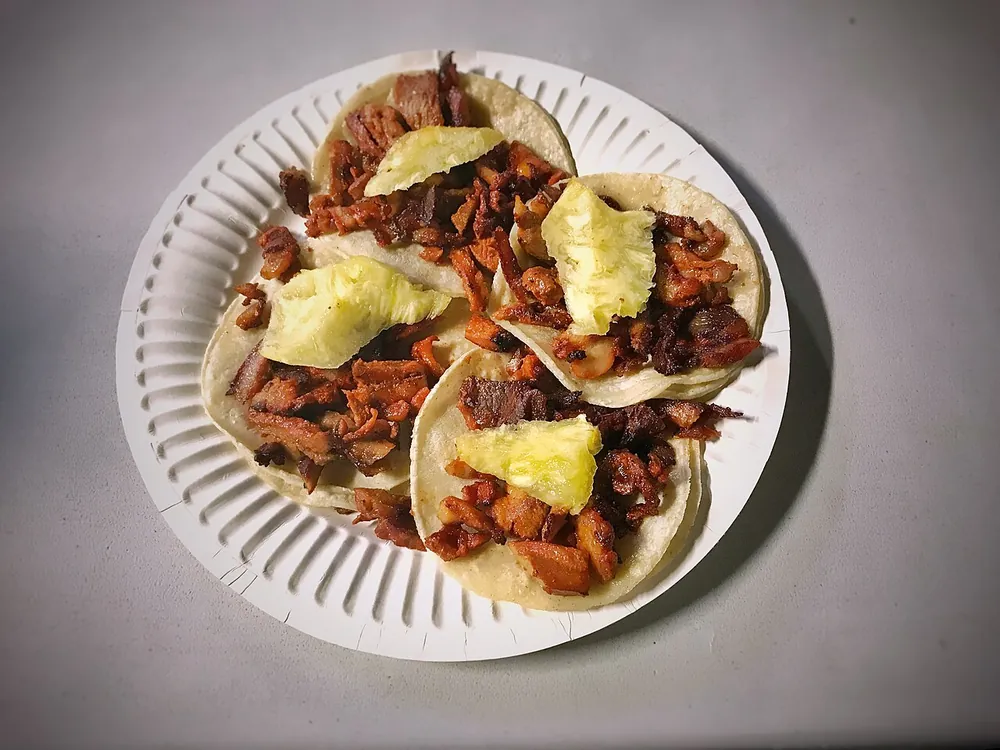
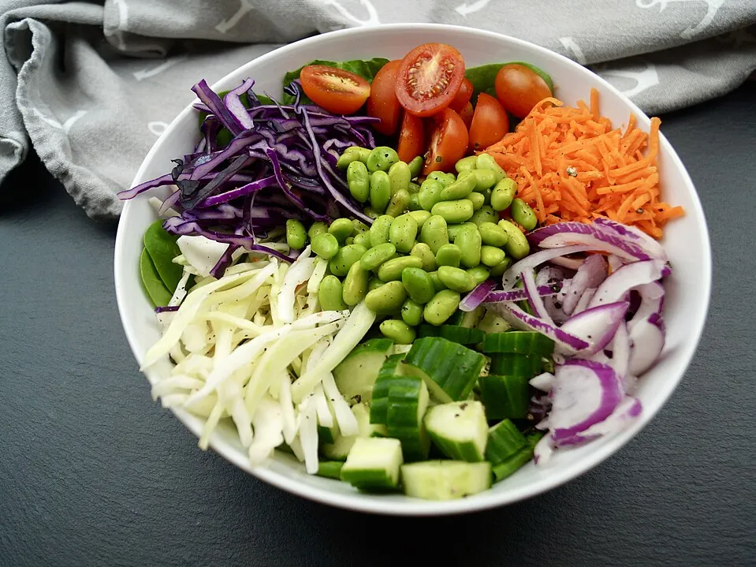

Desserts & pâtisserie Tarte tatin ★★★★★ 4,8 (21) Note moyenne : 4,8 sur 5, 21 notes 65 min · Française
Entrées Rouleaux de printemps crevettes-menthe ★★★★☆ 4,1 (6) Note moyenne : 4,1 sur 5, 6 notes 35 min · Vietnamienne
 Street food Tacos al pastor ★★★★☆ 4,3 (12) Note moyenne : 4,3 sur 5, 12 notes 45 min · Mexicaine
En-cas Houmous maison et pita grillé ★★★★☆ 4,4 (11) Note moyenne : 4,4 sur 5, 11 notes 15 min · Libanaise
 Healthy Bowl de riz, tofu mariné et légumes croquants ★★★★☆ 4,2 (7) Note moyenne : 4,2 sur 5, 7 notes 40 min · Japonaise
Gastronomique Magret de canard sauce aux cerises ★★★★★ 4,7 (9) Note moyenne : 4,7 sur 5, 9 notes 45 min · Française
Street food Banh mi au porc caramélisé ★★★☆☆ 3,4 (3) Note moyenne : 3,4 sur 5, 3 notes 40 min · Vietnamienne